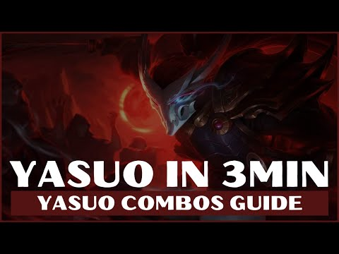
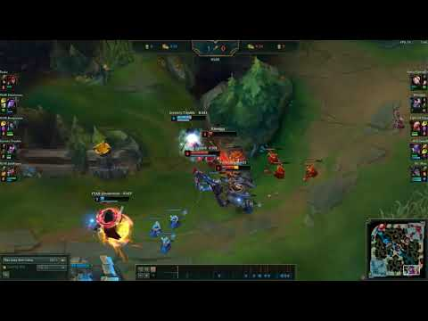
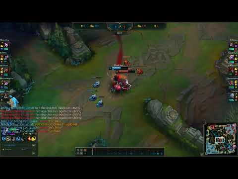

Phần lớn sát thương của Yasuo không đến từ bộ kỹ năng với lượng chí mạng tuyệt vời, sát thương của Yasuo đến từ những đòn đánh thường kết hợp 1 phần với chiêu thức để tạo nên những cơn gió thổi bay "mùa hè" của team địch.
1. Combo trao đổi chiêu thức Yasuo hiệu quả
- Đánh thường (AA) > Bão thép (Q) > Đánh thường (AA) > Bão thép (Q) > Đánh thường (AA) > Quét kiếm (E) > Bão Thép (Q) để hất tung kẻ địch lên > Trăn trối (R)
- Đánh thường (AA) > Bão thép (Q) > Đánh thường (AA) > Bão thép (Q) > Đánh thường (AA) > Bão thép (Q) + Flash > Trăn trối (R)
2. Mẹp chơi Yasuo

Mẹo cao thủ: Bạn có thể sử dụng Q để đâm vào bãi Chim biến dị trong quá trình đi đường giữa để tích nội tại Q, sau đó có thế hất tung khi cần
- Kỹ năng E Q có rất nhiều biến thể để người chơi có thể biến ảo với tốc biến. Để tạo thành combo đẹp mắt, thứ tự Combo sẽ như sau:
- Luôn tích Gió (Q) trong người để có thể khống chế kẻ địch mọi lúc
- Lướt qua đàn lính với E của bạn trong khi luôn để lại ít nhất 1 lính không bị ảnh hưởng để bạn có thể thoát ra sau khi giao tranh.
